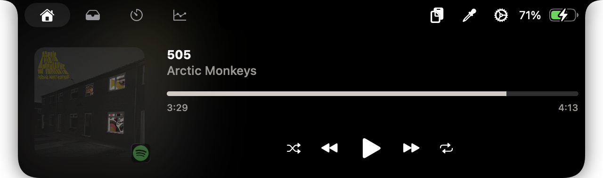

Power at Your Fingertips
Explore the deep utility suite designed to make your notch not just bearable, but essential.
Media Integration
Full playback control with album art extraction. Works seamlessly with Apple Music and Spotify.

System Insights
Real-time per-core tracking, thermal status, and network activity monitoring.

Utility Suite
Timers with iOS-style countdowns, persistent clipboard history, and color picker.


System & Lock Screen
Weather via Open Meteo, Bluetooth status, Focus modes, and privacy indicators for Mic/Camera.
Interactive Experience
Fluid Gestures
Swipe horizontally on the notch to switch between active media and dashboard views.
Mode Switch
Toggle between a minimalistic capsule or the full standard dashboard information.